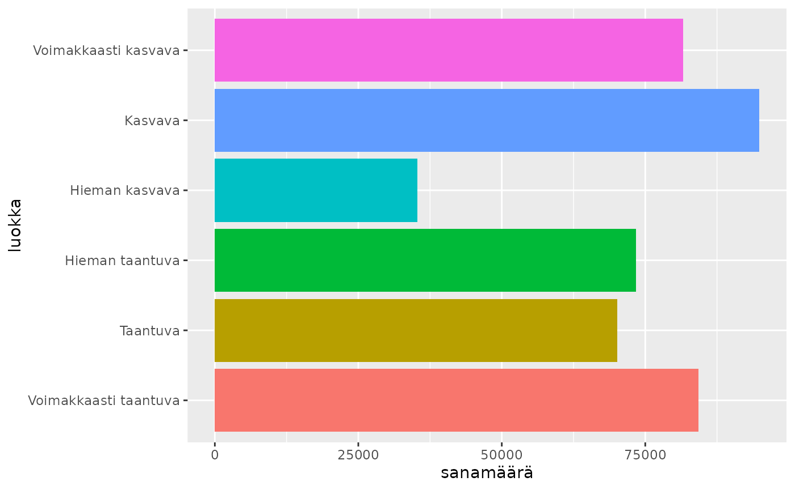
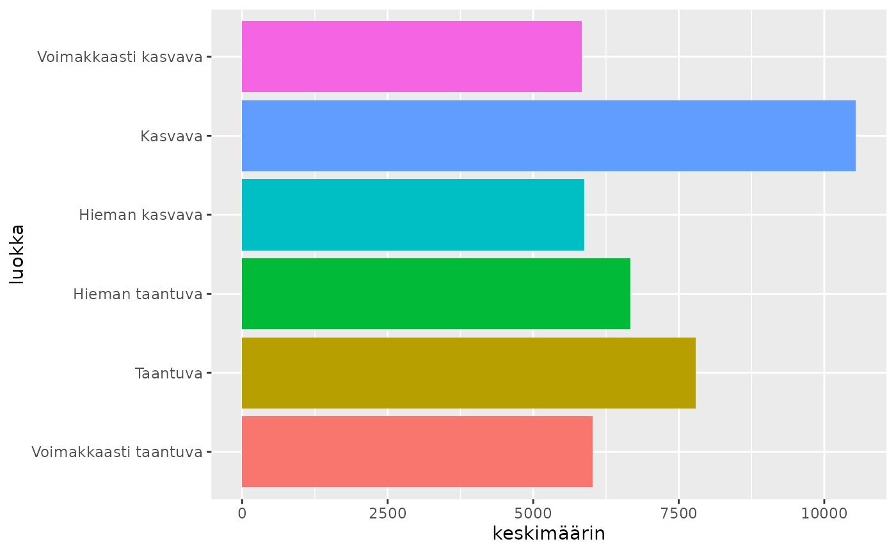

1 Asuntopoliittisten ohjelmien teko kunnissa
Source:vignettes/articles/1-Asuntopoliittisten-ohjelmien-teko-kunnissa.Rmd
1-Asuntopoliittisten-ohjelmien-teko-kunnissa.Rmd
library(rfintext)
# install.packages(devtools)
devtools::install_github("StranMax/rfinstats")
library(rfinstats)
library(sf)
library(dplyr)
library(ggplot2)
aspol
#> # A tibble: 468,205 × 13
#> kunta sent ID FORM LEMMA UPOSTAG XPOSTAG FEATS HEAD DEPREL DEPS MISC
#> <chr> <int> <chr> <chr> <chr> <chr> <chr> <chr> <chr> <chr> <chr> <chr>
#> 1 Enont… 1 1 Khall Khall PROPN _ Case… 0 root _ "_"
#> 2 Enont… 1 2 19.4… 19.4… NUM _ _ 1 nmod _ "_"
#> 3 Enont… 1 3 $ $ PUNCT _ _ 4 punct _ "_"
#> 4 Enont… 1 4 126 126 NUM _ NumT… 1 nummod _ "Spa…
#> 5 Enont… 2 1 ( ( PUNCT _ _ 2 punct _ "Spa…
#> 6 Enont… 2 2 N N NOUN _ Abbr… 0 root _ "Spa…
#> 7 Enont… 3 1 Enon… Enon… PROPN _ Case… 0 root _ "Spa…
#> 8 Enont… 4 1 KUNTA kunta NOUN _ Case… 0 root _ "Spa…
#> 9 Enont… 5 1 VUOK… vuok… NOUN _ Case… 2 nmod:… _ "Spa…
#> 10 Enont… 5 2 KEHI… kehi… NOUN _ Case… 0 root _ "Spa…
#> # ℹ 468,195 more rows
#> # ℹ 1 more variable: doc <chr>
kunnat_aspol_sf <- taantuvat |>
left_join(kuntalista) |>
left_join(kunnat) |>
st_as_sf()
#> Joining with `by = join_by(kunta)`
#> Joining with `by = join_by(kunta)`
ggplot(kunnat_aspol_sf) +
geom_sf(aes(fill = aspol)) +
theme_void()
ohjelmat_per_luokka <- kunnat_aspol_sf |>
count(luokka, aspol, sort = TRUE)
ggplot(kunnat_aspol_sf) +
geom_bar(aes(x = aspol, fill = luokka), position = "fill") +
coord_flip()
sanat_per_luokka <- aspol |>
left_join(taantuvat) |>
filter(!is.na(luokka)) |>
group_by(luokka) |>
count(luokka, name = "sanamäärä", sort = TRUE)
#> Joining with `by = join_by(kunta)`
ggplot(sanat_per_luokka) +
geom_col(aes(x = sanamäärä, y = luokka, fill = luokka), show.legend = FALSE)
keskim_sanat_per_luokka <- sanat_per_luokka |>
left_join(count(kunnat_aspol_sf, aspol, luokka, name = "luokkakoko")) |>
filter(aspol == "Ohjelma laadittu") |>
mutate(keskimäärin = sanamäärä/luokkakoko)
#> Joining with `by = join_by(luokka)`
ggplot(keskim_sanat_per_luokka) +
geom_col(aes(x = keskimäärin, y = luokka, fill = luokka), show.legend = FALSE)